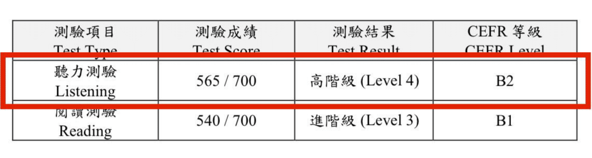
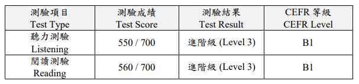
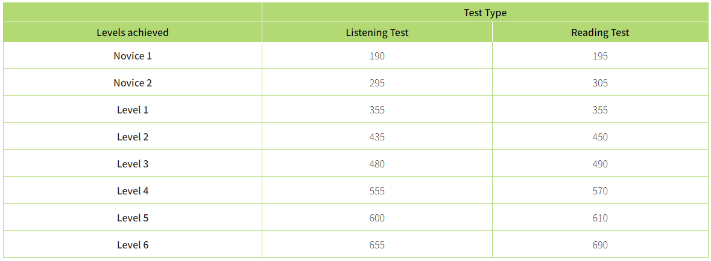

Elliott Jones
New Taipei City


Close to a decade in Taiwan and mainland China. Near-native level Mandarin Chinese fluency. Have worked for the British government in Shanghai and for many of Taiwan’s top hardware and software companies.
I Passed TOCFL Listening Level 4 (Chinese CEFR B2)
Posted May 18, 2024 by Elliott Jones
{kind=link}

On May 18th, I once again took the TOCFL (Test of Chinese as a Foreign Language) Listening & Reading exam.
The TOCFL is Taiwan's Mandarin Chinese proficiency exam for non-native speakers.
Previous Attempt
My previous TOCFL Listening & Reading exam was on April 13th, as documented in my earlier article. Long story short, I received a Level 3, equivalent to CEFR B1. My goal was Level 4 (CEFR B2), but I was 5 points short on the listening section and 10 points short on the reading section. The score was lower than I expected, considering I have been using Chinese at home and work for years.
{kind=link}

Goal
Going into the exam for the second time, my goal was again to achieve Level 4 (CEFR B2). Below is a chart I made roughly comparing the TOCFL to HSK 3.0 and HSK 2.0.

Preparation
I had just over a month between my April 13th exam and my May 18th exam, and I studied Chinese more during this roughly one-month period than I ever have before.
Flashcards
In my previous article, I mentioned that I was quite excited about Hack Chinese. It is essentially a slightly enhanced version of Anki and Pleco flashcards with tons of pre-assembled lists. While the platform has its value, shortly after my last exam, I stopped using it. Flashcards alone became quite tedious and made the learning experience rather unenjoyable. I realized I wouldn’t be able to sustain this approach long term, so I adjusted my strategy. Aside from a few days right after my last exam, I didn’t use flashcards during my preparation for the May 18th attempt, and I have no regrets about this decision.
Podcasts
In my earlier article, I noted how much I enjoyed the Learn Taiwanese Mandarin podcast, though it was a bit too easy for me. To prepare for my May 18th exam, I decided to switch to a native-level podcast, settling on 打個電話給你 One Call Away. While I believe it is intended for native Chinese speakers, it gained popularity among advanced Chinese learners, leading the hosts to release episode transcripts. However, I’m not entirely sure of their intended audience since I’ve never heard them explicitly state it.
During the roughly one-month period leading up to my exam, I listened to 40 episodes of the podcast, each typically over an hour long. I could understand about 95% of the individual words, which was perfect for me—it allowed me to follow the conversations while still learning new vocabulary.
Graded Readers
Last time, I shared how much I enjoyed using Du Chinese but didn’t have much time for it due to decorating. This changed in the past month, and I managed to read 83 upper-intermediate articles and 4 advanced articles, including both business courses and a 38-chapter story called A Game. For every upper-intermediate article I read in Traditional Chinese, I also read it again in Simplified Chinese.
I feel very comfortable reading upper-intermediate Du Chinese articles, which allowed me to get through so many in a short time. However, I think I mainly succeeded in increasing my reading speed rather than expanding my comprehension of new characters or words. Moving forward, I will focus on reading more advanced articles and implementing a better strategy for reviewing the new words I encounter before taking my next exam.
Mock Exams
I completed only one and a half mock CAT exams before the test; the "half" was a practice where I only did the listening section, scoring 555 (exactly Level 4). In the full mock CAT exam, I scored 575 for listening (Level 4) and 535 for reading (Level 3).
Background
Although the TOCFL Listening & Reading exam provides separate scores for listening and reading, your certificate reflects the lowest level achieved in either section. For example, if you achieve Level 6 in listening but only Level 3 in reading, your certificate will indicate Level 3, as the lower score determines your final certification.
Below is a table from the TOCFL website showing the scores required for each level.
{kind=link}

My Result
At the end of the CAT exam, your score and level are displayed on the screen. I received a score of 565 (Level 4) for listening and 540 (Level 3) for reading. This was an improvement of 15 points in listening but a drop of 20 points in reading compared to my previous attempt. Consequently, my new certificate will still show Level 3, despite achieving Level 4 in the listening section. While my score report will reflect the Level 4 listening achievement, it is unlikely an employer would ask to see it.
I expected my listening score to improve slightly, given the amount of native-level content I consumed over the past month, but I find it hard to accept that my reading performance declined. Since I started reading Du Chinese articles daily, I’ve noticed a significant improvement in my reading speed and rarely need to stop and think about the meaning of a sentence. I believe the lower reading score this time might be attributed to exam questions that were less aligned with topics I am familiar with compared to those on the previous exam.